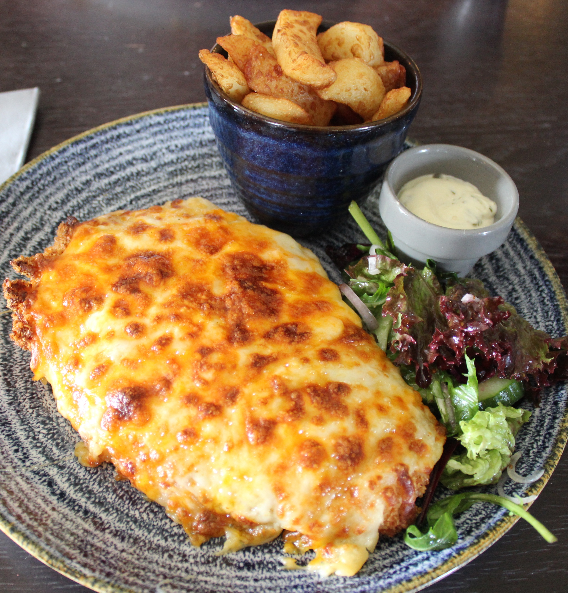

Chicken Parmesan
Home

Description
Chicken Parmesan is a classic Italian-American comfort food made of breaded chicken cutlets
topped with marinara or tomato sauce, melted mozzarella, and Parmesan cheese.
It is no doubt the most popular non-pasta dish in Italian-American style restaurants.
And while this delicious meal may seem fancy, it's actually pretty easy to make at home.
In fact, chicken Parmesan is one of those meals that's often best made in your own kitchen.
The main problem I have with most versions of Chicken Parmesan served in restaurants
is that they
drown the chicken in so much sauce and cheese that it ends up being a big soggy clump of chicken and cheese.
But it doesn't have to be that way, not with this method.
Ingredients
- 4 skinless, boneless chicken breast halves
- salt and freshly ground black pepper to taste
- 2 large eggs
- 1 cup panko bread crumbs, or more as needed
- ¾ cup freshly grated Parmesan cheese, divided
- 2 tablespoons all-purpose flour, or more if needed
- ½ cup olive oil for frying, or as needed
- ½ cup prepared tomato sauce
- ¼ cup fresh mozzarella, cut into small cubes
- ¼ cup chopped fresh basil
- ½ cup freshly grated provolone cheese
- 2 teaspoons olive oil
Steps
- Gather all ingredients and preheat the oven to 230 degrees C(450 degrees F)
- Place chicken breasts between two sheets of heavy plastic (resealable freezer
bags work well) on a solid, level surface. Firmly pound chicken with the smooth
side of a meat
mallet to a thickness of 1/2-inch.
- Season chicken thoroughly with salt and pepper. Using a sifter or strainer,
sprinkle flour over chicken breasts, evenly coating both sides.
- Beat eggs in a shallow bowl and set aside. Mix bread crumbs and 1/2 cup Parmesan
cheese in a separate bowl, set aside. Dip a flour-coated chicken breast in beaten eggs.
Transfer breast to the bread crumb mixture, pressing crumbs into both sides. Repeat for
each breast. Let chicken rest for 10 to 15 minutes.
- Heat 1/2 inch of olive oil in a large skillet over medium-high heat until it begins to shimmer.
Cook chicken in batches, so you do not overcrowd the pan, until golden,
about 2 minutes per side.
The chicken will finish cooking in the oven.
- Transfer chicken to a baking dish. Top each breast with 2 tablespoons tomato sauce. Layer each
chicken breast with equal amounts of mozzarella cheese, fresh basil,
and provolone cheese.
Sprinkle remaining Parmesan over top and drizzle each with 1/2 teaspoon olive oil.
- Bake in the preheated oven until cheese is browned and bubbly and chicken breasts are no
longer pink in the center, 15 to 20 minutes. An instant-read thermometer inserted
into the center
should read at least 165 degrees F (74 degrees C). Let chicken rest briefly before serving.